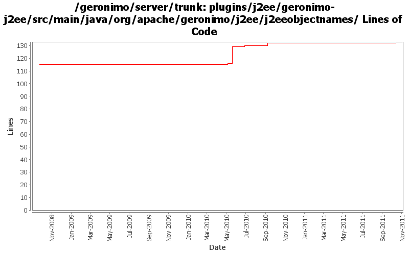

[root]/plugins/j2ee/geronimo-j2ee/src/main/java/org/apache/geronimo/j2ee/j2eeobjectnames

| Author | Changes | Lines of Code | Lines per Change |
|---|---|---|---|
| Totals | 7 (100.0%) | 18 (100.0%) | 2.5 |
| djencks | 5 (71.4%) | 15 (83.3%) | 3.0 |
| vamsic007 | 1 (14.3%) | 2 (11.1%) | 2.0 |
| rwonly | 1 (14.3%) | 1 (5.6%) | 1.0 |
a typo in NameFactory
1 lines of code changed in 1 file:
GERONIMO-5222 Add support for application validation descriptor support for deployed applications
o Support for web applications
o ModuleBuilderExtension to add ValidatorFactoryGBean.
o Hook the module builder extension to tomcat builder.
2 lines of code changed in 1 file:
support managed ejbs
1 lines of code changed in 1 file:
GERONIMO-4918 port of dependency setup changes from 2.2
13 lines of code changed in 1 file:
a little bit of singleton support
1 lines of code changed in 1 file:
GERONIMO-4258 clean up some naming constant usage
0 lines of code changed in 2 files: